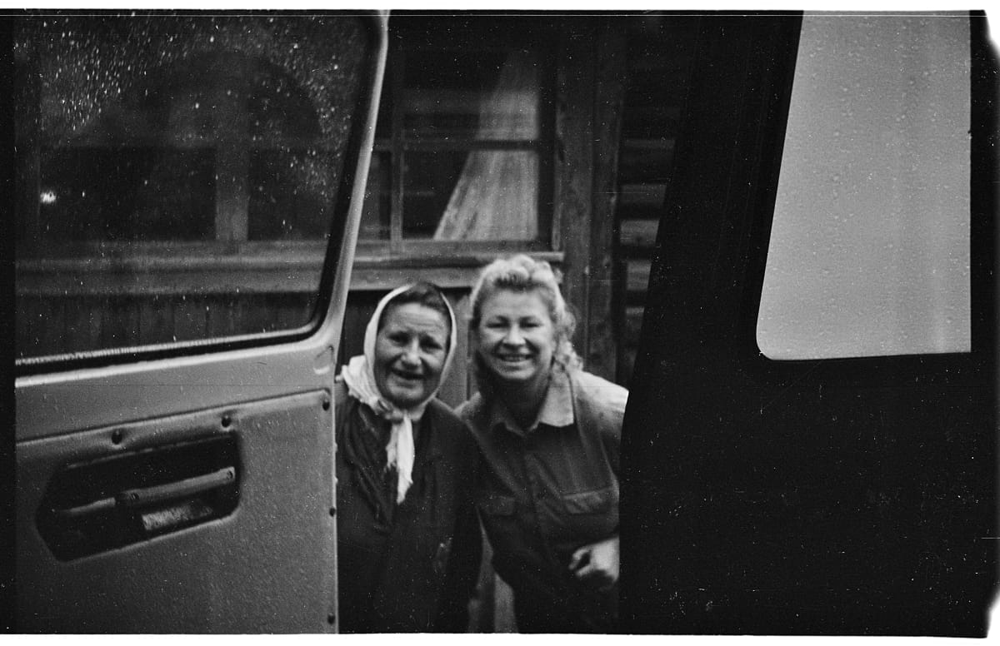

Старые пленки
Вспомнил, что у меня где-то была фотография мамы, полез копаться в негативах и нашел несколько старых пленок. Эти снимки сделаны мной на фотоаппарат Смена 8М где-то в начале 90-x, мне тогда было лет 13-15 и мы с одноклассником некоторое время ходили в фотокружок, а потом сами проявляли и даже что-то печатали.
Несколько фотографий из деревни Шегрино, где мы с братом проводили каждое лето с конца 80-х и до моего поступления в институт, то есть, до 1997-го.
Жилая часть нашего дома:

Подружка Настя и мой брат Фёдор (на фоне хозяйственной пристройки-сарая, в углу припаркован мой велосипед Салют):

Соседские девчонки Марина и Оля:

Брат куда-то топит на своей Каме:

Баба Дуся и мама. Фотография сделана в конце лета, когда я уже сидел в машине, на которой мы уезжали из деревни домой, а баба Дуся пришла нас проводить:

Папа где-то в процессе строительства бани:

Школьный поход в саблинские пещеры:

Кто-то и меня щелкнул в том же походе:

Такие дела.